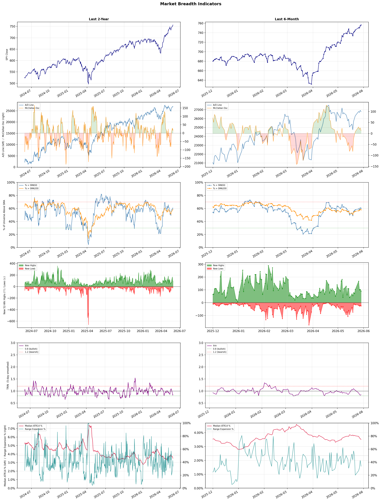

A daily research map of market breadth, industry rotation, and technical setups
| Item | Read |
|---|---|
| Regime | Risk-On |
| Risk posture | Selective |
| Indices | QQQ 738.31 (+0.4% today) |
| Universe | 1,706 stocks tracked · 90 new 52-week highs · 30 active swing setups |
| Breadth | 60.4% of tracked stocks are above SMA50, new highs exceed new lows (90 vs 25) |
| Leadership | Semiconductors, Computer Hardware, and Solar |
| Weakest groups | Industrial Distribution, Packaged Foods, and Uranium |
Use this report to prioritize research and chart review; validate entries, stops, liquidity, earnings, and risk before acting.
| Item | Read |
|---|---|
| Primary read | Risk-On regime with Selective risk posture. |
| Research queue | ALAB, VSH, HIMX, MU, POET |
| Leadership focus | Semiconductors, Computer Hardware, and Solar |
| Caution list | Industrial Distribution, Packaged Foods, and Uranium |
| Review prompt | Check extension risk, chart location, fundamentals, valuation, and earnings before using any research row. |
| Item | Read |
|---|---|
| Primary read | 1 active risk warnings; use screen output as watchlist input only. |
| Bullish screens | ARM, CRDO, QCOM, DELL, SNDK |
| Bearish screens | none |
| Alerts / levels | Automated trigger, stop, ATR, liquidity, reward/risk, and event-risk levels are pending future enrichment. |
| Review prompt | Open the linked chart, define trigger and invalidation, then check liquidity and event risk independently. |
Risk Posture: Selective — screen backdrop supports selective research in leading industries
Metric context: McClellan below -50 = elevated selling pressure; below -100 = washout territory. Range Expansion = share of stocks with daily range above their 20-day average. Signal Density = share of tracked names appearing in signal screens.
| Breadth Date | % > SMA50 | % > SMA200 | New Highs | New Lows | McClellan | Median Range | Avg Range | Median ATR14 | Range Expansion | Signal Density |
|---|---|---|---|---|---|---|---|---|---|---|
| 2026-05-29 | 60.4% | 57.9% | 90 | 25 | 12.7 | 2.8% | 3.6% | 3.5% | 33.7% | 8.5% |

Prior comparison date: May 28, 2026
| Metric | Prior | Current | Change |
|---|---|---|---|
| Regime | Risk-On | Risk-On | unchanged |
| Risk Posture | Selective | Selective | unchanged |
| % > SMA50 | 60.8% | 60.4% | -0.3 pts |
| % > SMA200 | 58.6% | 57.9% | -0.7 pts |
| New Highs | 104 | 90 | -14 |
| New Lows | 25 | 25 | +0 |
Top-10 industries entering: Trucking. Top-10 industries leaving: Aerospace & Defense. New multi-signal long setups: ABCL, ARM, BB, CRDO, CRWD, DDOG, DELL, DRS, FROG, FSLR. New multi-signal short setups: none.
| Status | Tickers | Read |
|---|---|---|
| Added | ABCL, ARM, BB, CRDO, CRWD, DDOG, DELL, DRS | New technical screen matches vs prior report. |
| Removed | ACMR, ALAB, ASTS, ASX, BTSG, CNI, CORZ, CROX | No longer present in today's technical screen matches. |
| Still Active | BWA, F, GE, ILMN, JBLU, KNX, NUE, SLS | Appeared in both current and prior reports. |
| Promoted | none | Model Screen Score improved by at least 15 points. |
| Downgraded | none | Model Screen Score declined by at least 15 points. |
| Direction | Industry | Prior Rank | Current Rank | Days | Rank Change |
|---|---|---|---|---|---|
| Rose | Solar | 98 | 3 | 42 | +95 |
| Rose | Diagnostics & Research | 98 | 17 | 35 | +81 |
| Rose | Aerospace & Defense | 90 | 11 | 35 | +79 |
| Rose | Airlines | 89 | 14 | 35 | +75 |
| Rose | Software - Infrastructure | 85 | 12 | 42 | +73 |
| Direction | Industry | Prior Rank | Current Rank | Days | Rank Change |
|---|---|---|---|---|---|
| Fell | Uranium | 22 | 96 | 28 | -74 |
| Fell | Engineering & Construction | 13 | 84 | 28 | -71 |
| Fell | Utilities - Regulated Gas | 21 | 91 | 35 | -70 |
| Fell | Apparel Manufacturing | 7 | 73 | 42 | -66 |
| Fell | Oil & Gas E&P | 19 | 81 | 14 | -62 |
| Industry | Rank | ETF | 7d | 14d | 28d | 42d | Chg 42d | Size | 20D | 60D | Composite | Active Setups |
|---|---|---|---|---|---|---|---|---|---|---|---|---|
| Semiconductors | 1 | SOXX | 2 | 1 | 1 | 2 | +1 | 36 | 31.8% | 99.8% | 0.987 | 3 |
| Computer Hardware | 2 | XLK | 1 | 7 | 3 | 8 | +6 | 14 | 38.0% | 72.1% | 0.978 | 2 |
| Solar | 3 | TAN | 3 | 9 | 68 | 98 | +95 | 8 | 49.8% | 55.4% | 0.974 | 2 |
| Electronic Components | 4 | XLK | 8 | 8 | 6 | 4 | 0 | 9 | 21.7% | 51.4% | 0.950 | 1 |
| Semiconductor Equipment & Materials | 5 | SOXX | 10 | 3 | 2 | 1 | -4 | 18 | 10.1% | 44.8% | 0.887 | 2 |
| Communication Equipment | 6 | IYZ | 4 | 5 | 4 | 3 | -3 | 17 | 14.8% | 42.2% | 0.877 | 3 |
| REIT - Hotel & Motel | 7 | XLRE | 9 | 18 | 12 | 17 | +10 | 7 | 9.7% | 13.8% | 0.877 | 1 |
| Electrical Equipment & Parts | 8 | XLI | 7 | 10 | 7 | 16 | +8 | 11 | 21.3% | 40.2% | 0.875 | 1 |
| Steel | 9 | SLX | 6 | 15 | 14 | 20 | +11 | 6 | 13.8% | 20.4% | 0.874 | 2 |
| Trucking | 10 | IYT | 11 | 17 | 10 | 5 | -5 | 5 | 12.1% | 19.6% | 0.863 | 2 |
Rank columns (7d–42d) show the industry's rank that many trading days ago — lower is stronger. Chg 42d = rank change vs 42 trading days ago — positive means the industry moved up. 20D and 60D are the mean stock return within the industry over that period. Active Setups: count of today's swing-trade candidates from this industry appearing across all signal screens.
| Industry | Rank | ETF | 7d | 14d | 28d | 42d | Chg 42d | Size | 20D | 60D | Composite | Active Setups |
|---|---|---|---|---|---|---|---|---|---|---|---|---|
| Industrial Distribution | 98 | N/A | 96 | 92 | 66 | 40 | -58 | 6 | -10.4% | -10.2% | 0.080 | 1 |
| Packaged Foods | 97 | XLP | 97 | 95 | 92 | 97 | 0 | 17 | -9.8% | -18.5% | 0.083 | 2 |
| Uranium | 96 | URA | 95 | 85 | 22 | 61 | -35 | 6 | -10.4% | -11.1% | 0.135 | 0 |
| Waste Management | 95 | N/A | 86 | 65 | 91 | 96 | +1 | 5 | -6.8% | -10.0% | 0.142 | 2 |
| Household & Personal Products | 94 | XLP | 89 | 89 | 80 | 95 | +1 | 12 | -3.6% | -12.4% | 0.170 | 2 |
| Furnishings, Fixtures & Appliances | 93 | N/A | 98 | 98 | 73 | 74 | -19 | 7 | -6.5% | -13.1% | 0.172 | 0 |
| Utilities - Regulated Electric | 92 | XLU | 67 | 81 | 72 | 66 | -26 | 29 | -4.6% | -6.1% | 0.189 | 1 |
| Utilities - Regulated Gas | 91 | XLU | 65 | 60 | 24 | 32 | -59 | 6 | -7.7% | -3.1% | 0.201 | 1 |
| Real Estate Services | 90 | N/A | 85 | 84 | 78 | 88 | -2 | 10 | -6.5% | -9.8% | 0.205 | 1 |
| REIT - Mortgage | 89 | N/A | 88 | 76 | 54 | 80 | -9 | 15 | -5.1% | -4.8% | 0.209 | 2 |
Rank columns (7d–42d) show the industry's rank that many trading days ago — lower is stronger. Chg 42d = rank change vs 42 trading days ago — positive means the industry moved up. 20D and 60D are the mean stock return within the industry over that period. Active Setups: count of today's swing-trade candidates from this industry appearing across all signal screens.
These are research candidates from top-ranked stocks, capped at five names per industry to avoid over-concentration. Returns shown (60D, 120D, 250D) are historical — they reflect where prices have already moved, not forward expectations. Extension Risk flags names that may require extra patience or a better entry point. They are not buy signals.
Chart: TV = TradingView chart (opens in browser); PDF = local chart file (if downloaded).
| Ticker | Name | Industry | Industry Rank | Market Cap | 60D Hist | 120D Hist | 250D Hist | Extension Risk | Research Reason | Chart |
|---|---|---|---|---|---|---|---|---|---|---|
| ALAB | Astera Labs | Semiconductors | 1 | 20.3B | 201.4% | 124.8% | 277.9% | Very extended | Top-ranked in industry; very extended | TV · PDF |
| VSH | Vishay Intertechnology | Semiconductors | 1 | 2.3B | 192.7% | 243.6% | 269.9% | Very extended | Top-ranked in industry; very extended | TV · PDF |
| HIMX | Himax Technologies | Semiconductors | 1 | 1.3B | 168.9% | 149.9% | 152.4% | Very extended | Top-ranked in industry; very extended | TV · PDF |
| MU | Micron Technology | Semiconductors | 1 | 416.8B | 142.3% | 328.4% | 927.9% | Very extended | Top-ranked in industry; very extended | TV · PDF |
| POET | POET Technologies | Semiconductors | 1 | 959.0M | 79.7% | 92.9% | 183.2% | Extended | Top-ranked in industry; extended | TV · PDF |
| DELL | Dell Technologies | Computer Hardware | 2 | 97.1B | 186.1% | 202.8% | 278.3% | Very extended | Top-ranked in industry; very extended | TV · PDF |
| SNDK | SanDisk | Computer Hardware | 2 | 77.8B | 182.9% | 694.6% | 4397.2% | Very extended | Top-ranked in industry; very extended | TV · PDF |
| IONQ | IonQ Inc | Computer Hardware | 2 | 13.1B | 94.1% | 31.6% | 78.7% | Extended | Top-ranked in industry; extended | TV · PDF |
| QBTS | D-Wave Quantum | Computer Hardware | 2 | 6.8B | 59.4% | 4.9% | 84.6% | Extended | Top-ranked in industry; extended | TV · PDF |
| SMCI | Super Micro Computer | Computer Hardware | 2 | 18.8B | 41.2% | 34.6% | 15.2% | Constructive | Top-ranked in industry | TV · PDF |
| SHLS | Shoals Technologies | Solar | 3 | 956.1M | 102.8% | 57.0% | 163.8% | Very extended | Top-ranked in industry; very extended | TV · PDF |
| SEDG | SolarEdge Technologies | Solar | 3 | 2.0B | 101.2% | 139.0% | 327.5% | Very extended | Top-ranked in industry; very extended | TV · PDF |
| ENPH | Enphase Energy | Solar | 3 | 5.3B | 60.2% | 122.2% | 65.2% | Extended | Top-ranked in industry; extended | TV · PDF |
| FSLR | First Solar | Solar | 3 | 20.3B | 55.5% | 19.2% | 94.1% | Extended | Top-ranked in industry; extended | TV · PDF |
| RUN | Sunrun | Solar | 3 | 2.7B | 37.4% | -8.9% | 123.2% | Constructive | Top-ranked in industry | TV · PDF |
| FLEX | Flex Ltd | Electronic Components | 4 | 22.0B | 135.8% | 146.4% | 256.5% | Very extended | Top-ranked in industry; very extended | TV · PDF |
| OUST | Ouster | Electronic Components | 4 | 1.3B | 105.8% | 77.2% | 276.5% | Very extended | Top-ranked in industry; very extended | TV · PDF |
| TTMI | TTM Technologies | Electronic Components | 4 | 9.1B | 65.2% | 138.5% | 481.8% | Extended | Top-ranked in industry; extended | TV · PDF |
| RAL | Ralliant | Electronic Components | 4 | 5.0B | 31.6% | 19.8% | 30.3% | Constructive | Top-ranked in industry | TV · PDF |
| GLW | Corning | Electronic Components | 4 | 105.8B | 25.1% | 112.0% | 265.3% | Extended | Top-ranked in industry; extended | TV · PDF |
These are technical screen matches from existing signal files. They are not trade recommendations. Trigger, stop, ATR, liquidity, reward/risk, and event risk still require separate validation until those inputs are available.
Model Screen Score is weighted by signal count, industry rank, freshness, and setup type. It is not a probability of profit, expected return, or suitability rating. Industry cap: max 3 candidates per industry.
Signal glossary: Momentum Pullback = stock in an uptrend that has pulled back 10–30% and shows re-entry conditions. MA Compression = short- and long-term moving averages converging, often preceding a directional move. Three-Day Up/Down = three consecutive closes in the same direction. New 52Wk High/Low = price reached a new annual extreme.
Chart: TV = TradingView chart (opens in browser); PDF = local chart file (if downloaded).
| Ticker | Industry | Setups | Close | Industry Rank | Signal Count | Model Screen Score | Reason | Chart |
|---|---|---|---|---|---|---|---|---|
| ARM | Semiconductors | New 52Wk High; Three-Day Up | 353.29 | 1 | 2 | 100 | Multi-signal; top industry breakout | TV · PDF |
| CRDO | Semiconductors | New 52Wk High; Three-Day Up | 236.03 | 1 | 2 | 100 | Multi-signal; top industry breakout | TV · PDF |
| QCOM | Semiconductors | New 52Wk High; Three-Day Up | 251.02 | 1 | 2 | 100 | Multi-signal; top industry breakout | TV · PDF |
| DELL | Computer Hardware | New 52Wk High; Three-Day Up | 420.91 | 2 | 2 | 100 | Multi-signal; top industry breakout | TV · PDF |
| SNDK | Computer Hardware | New 52Wk High; Three-Day Up | 1694.98 | 2 | 2 | 100 | Multi-signal; top industry breakout | TV · PDF |
| FSLR | Solar | New 52Wk High; Three-Day Up | 306.79 | 3 | 2 | 100 | Multi-signal; top industry breakout | TV · PDF |
| NXT | Solar | New 52Wk High; Three-Day Up | 156.40 | 3 | 2 | 100 | Multi-signal; top industry breakout | TV · PDF |
| JBLU | Airlines | MA Compression; Momentum Pullback | 5.47 | 14 | 2 | 90 | Multi-signal; pullback setup | TV · PDF |
| NUE | Steel | New 52Wk High; Three-Day Up | 250.00 | 9 | 2 | 85 | Multi-signal; top industry breakout | TV · PDF |
| KNX | Trucking | New 52Wk High; Three-Day Up | 75.63 | 10 | 2 | 85 | Multi-signal; top industry breakout | TV · PDF |
| DRS | Aerospace & Defense | New 52Wk High; Three-Day Up | 48.76 | 11 | 2 | 85 | Multi-signal; new-high strength | TV · PDF |
| BB | Software - Infrastructure | New 52Wk High; Three-Day Up | 9.00 | 12 | 2 | 85 | Multi-signal; new-high strength | TV · PDF |
| CRWD | Software - Infrastructure | New 52Wk High; Three-Day Up | 731.00 | 12 | 2 | 85 | Multi-signal; new-high strength | TV · PDF |
| OKTA | Software - Infrastructure | New 52Wk High; Three-Day Up | 123.27 | 12 | 2 | 85 | Multi-signal; new-high strength | TV · PDF |
| VSTS | Rental & Leasing Services | New 52Wk High; Three-Day Up | 12.92 | 15 | 2 | 85 | Multi-signal; new-high strength | TV · PDF |
| GE | Aerospace & Defense | MA Compression; Three-Day Up | 323.76 | 11 | 2 | 80 | Multi-signal; compression setup | TV · PDF |
| ILMN | Diagnostics & Research | New 52Wk High; Three-Day Up | 162.96 | 17 | 2 | 77 | Multi-signal; new-high strength | TV · PDF |
| PSNL | Diagnostics & Research | New 52Wk High; Three-Day Up | 11.40 | 17 | 2 | 77 | Multi-signal; new-high strength | TV · PDF |
| GS | Capital Markets | New 52Wk High; Three-Day Up | 1025.56 | 19 | 2 | 77 | Multi-signal; new-high strength | TV · PDF |
| HUT | Capital Markets | New 52Wk High; Three-Day Up | 124.83 | 19 | 2 | 77 | Multi-signal; new-high strength | TV · PDF |
| MS | Capital Markets | New 52Wk High; Three-Day Up | 208.00 | 19 | 2 | 77 | Multi-signal; new-high strength | TV · PDF |
| ABCL | Biotechnology | New 52Wk High; Three-Day Up | 6.17 | 20 | 2 | 77 | Multi-signal; new-high strength | TV · PDF |
| SLS | Biotechnology | New 52Wk High; Three-Day Up | 9.31 | 20 | 2 | 77 | Multi-signal; new-high strength | TV · PDF |
| HBM | Copper | New 52Wk High; Three-Day Up | 29.16 | 21 | 2 | 77 | Multi-signal; new-high strength | TV · PDF |
| TXG | Health Information Services | New 52Wk High; Three-Day Up | 28.31 | 23 | 2 | 77 | Multi-signal; new-high strength | TV · PDF |
| MGM | Resorts & Casinos | New 52Wk High; Three-Day Up | 43.67 | 25 | 2 | 77 | Multi-signal; new-high strength | TV · PDF |
| BWA | Auto Parts | New 52Wk High; Three-Day Up | 71.82 | 32 | 2 | 70 | Multi-signal; new-high strength | TV · PDF |
| DDOG | Software - Application | New 52Wk High; Three-Day Up | 247.35 | 33 | 2 | 70 | Multi-signal; new-high strength | TV · PDF |
| FROG | Software - Application | New 52Wk High; Three-Day Up | 79.48 | 33 | 2 | 70 | Multi-signal; new-high strength | TV · PDF |
| F | Auto Manufacturers | New 52Wk High; Three-Day Up | 17.44 | 35 | 2 | 70 | Multi-signal; new-high strength | TV · PDF |
How To Use This Report
| Use | Purpose |
|---|---|
| Market map | Start with breadth, regime, risk warnings, and what changed since the prior report. |
| Industry scan | Use leading, deteriorating, rising, and declining industries to focus research. |
| Research queue | Treat long-term candidates as names for deeper fundamental, valuation, and chart review. |
| Technical review | Treat bullish and bearish screen matches as watchlist inputs that require independent trigger, stop, liquidity, and event-risk checks. |
| Source follow-up | Use chart links and source files to verify raw inputs before relying on any row. |
What This Report Is Not
| Not | Meaning |
|---|---|
| Investment advice | The report does not evaluate personal objectives, risk tolerance, tax situation, account type, or suitability. |
| Buy/sell recommendation | Named tickers are research candidates or screen matches, not recommendations to transact. |
| Price target | The report does not provide fair value estimates, targets, or expected returns. |
| Trade plan | Trigger, stop, sizing, reward/risk, liquidity, and event-risk review remain separate user work. |
| Performance claim | Model Screen Score is not validated historical performance or a forecast of future results. |
| Item | Note |
|---|---|
| Version | Daily Report Methodology v1 |
| Model Screen Score | Screen-fit rank based on signal count, industry rank, freshness, and setup type. |
| Not predictive proof | The score is not expected return, probability of profit, historical validation, or suitability analysis. |
| Industry ranks | Composite industry ranks use existing daily ranking outputs and historical rank columns when available. |
| Research candidates | Long-term rows are research candidates from ranked stocks and leading industries, with historical returns labeled as historical only. |
| Technical matches | Bullish and bearish rows are screen matches requiring independent chart, trigger, stop, liquidity, and event-risk review. |
| Source | Status | Rows | Path |
|---|---|---|---|
| Market breadth | present | 1255 | breadth_20260529.csv |
| Industry composite rankings | present | 98 | all_industry_composite_20260529.csv |
| Top ranked stocks | present | 131 | top_ranked_composite_20260529.csv |
| All ranked stocks | present | 1706 | all_stocks_composite_sorted_20260529.csv |
| Top momentum pullbacks | present | 1802 | top_momentum_pullbacks_20260529.csv |
| MA compression | present | 1802 | ma_compression_stocks_20260529.csv |
| Three-day up/down | present | 278 | three_day_up_down_stocks_20260529.csv |
| New 52-week members | present | 115 | breadth_new_52wk_members_20260529.csv |
This report is generated from automated technical screens and is for informational and research purposes only. It is not investment advice, a solicitation, or a recommendation to buy or sell any security. Past performance is not indicative of future results. You are solely responsible for your own investment decisions. Consult a licensed financial advisor before acting on any information herein.